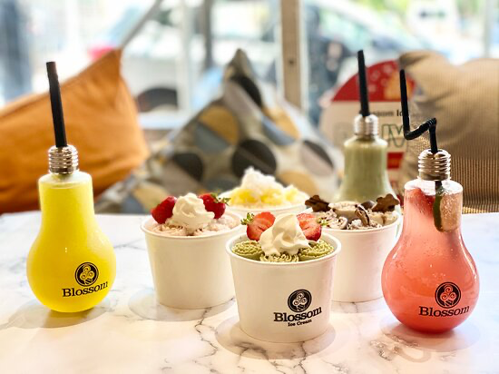
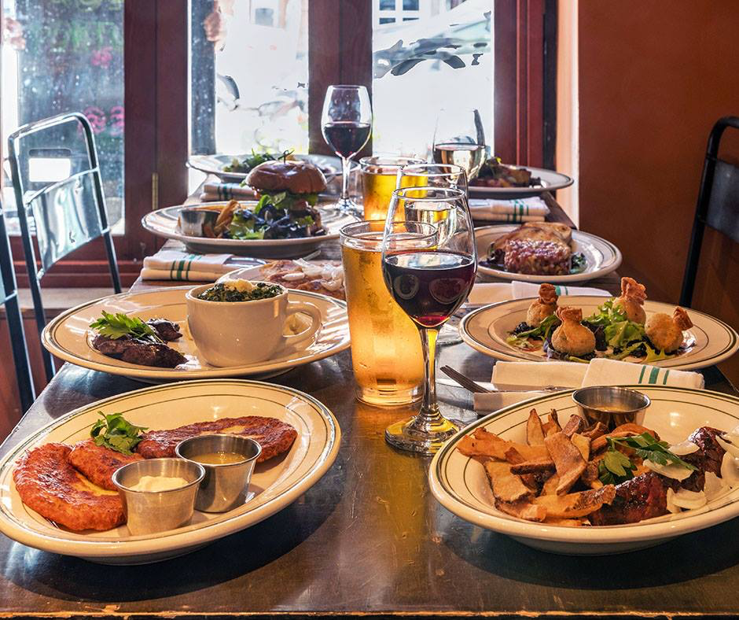
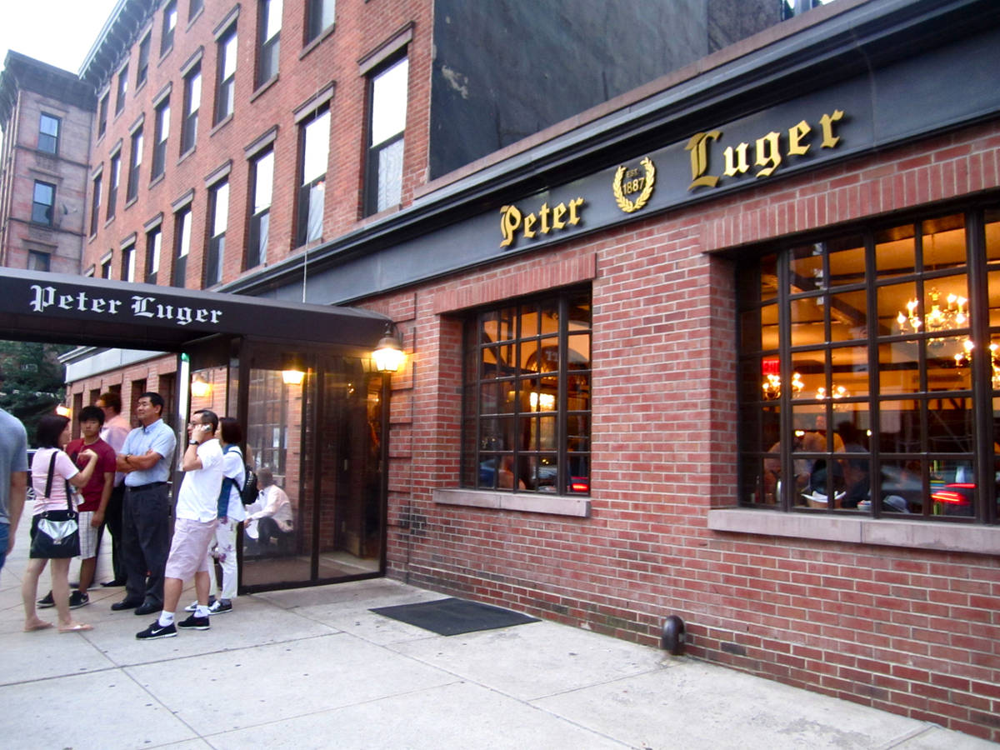

Blossom Ice Cream and the Poke Bowl has Hawaiin poke bowls and Asian-style hand-rolled ice cream. There are many delicious ice cream flavors to choose from, and toppings are free. The employees hand-roll the ice cream in front of you, so it is very cool to watch.

Dziupla is a traditional Polish restaurant that has dishes like pierogies, soups, salads, crepes, etc.

Peter Luger is a well-known Steak House that is located on the South side of Williamsburg. There is a variety of meats, appetizers, and desserts to choose from.